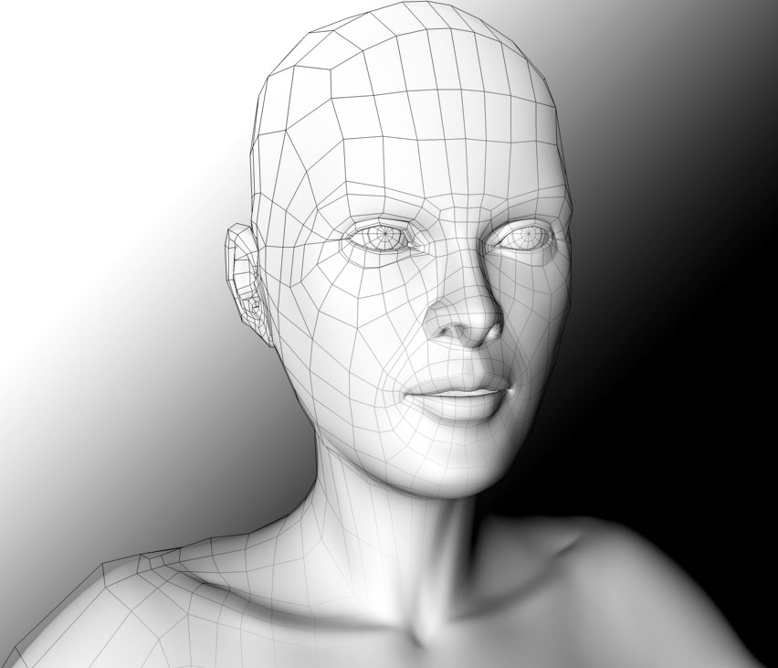

3D Modeling
- 3D modeling
- modeling process
- compared to 2D metheds
modeling process
There are three popular ways to represent a model:
- Polygonal modeling – Points in 3D space, called vertices,
are connected by line segments to form a polygon mesh.
The vast majority of 3D models today are built as textured polygonal models,
because they are flexible and because computers can render them so quickly.
However, polygons are planar and can only approximate curved surfaces using many polygons.

- Curve modeling – Surfaces are defined by curves, which are influenced
by weighted control points. The curve follows
(but does not necessarily interpolate) the points.
Increasing the weight for a point will pull the curve closer to that point.
Curve types include nonuniform rational B-spline (NURBS), splines, patches, and geometric primitives
- Digital sculpting – Still a fairly new method of modeling,
3D sculpting has become very popular in the few years it has been around.[citation needed]
There are currently three types of digital sculpting: Displacement,
which is the most widely used among applications at this moment,
uses a dense model (often generated by subdivision surfaces of a polygon control mesh)
and stores new locations for the vertex positions through use of an image map that stores the adjusted locations.
Volumetric, loosely based on voxels, has similar capabilities as displacement but does not suffer from polygon stretching
when there are not enough polygons in a region to achieve a deformation.
Dynamic tessellation is similar to voxel but divides the surface using triangulation to maintain a smooth surface and allow finer details.
These methods allow for very artistic exploration as the model will have a new topology created over it once the models form and possibly details have been sculpted.
The new mesh will usually have the original high resolution mesh information transferred into displacement data or normal map data if for a game engine.